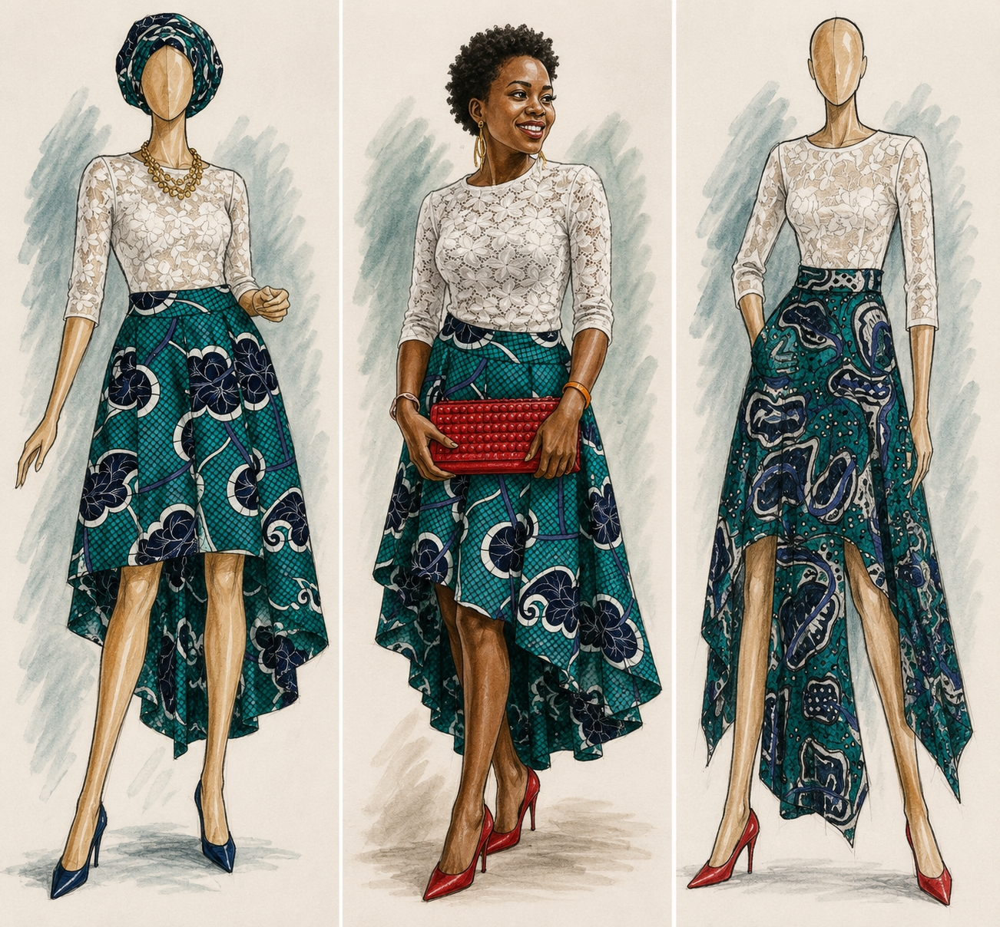
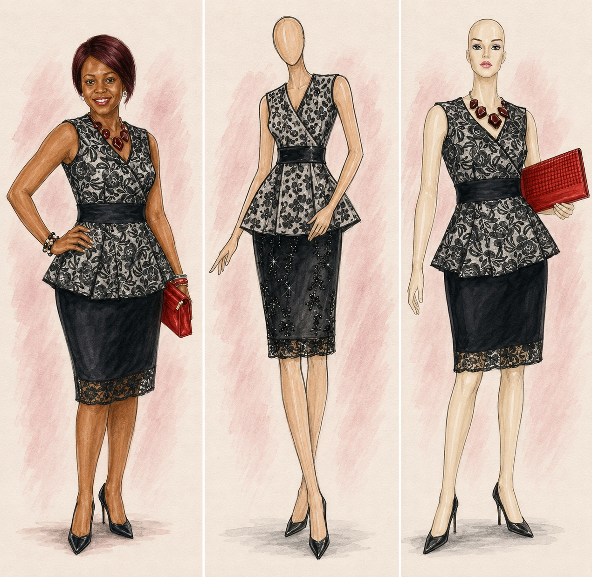
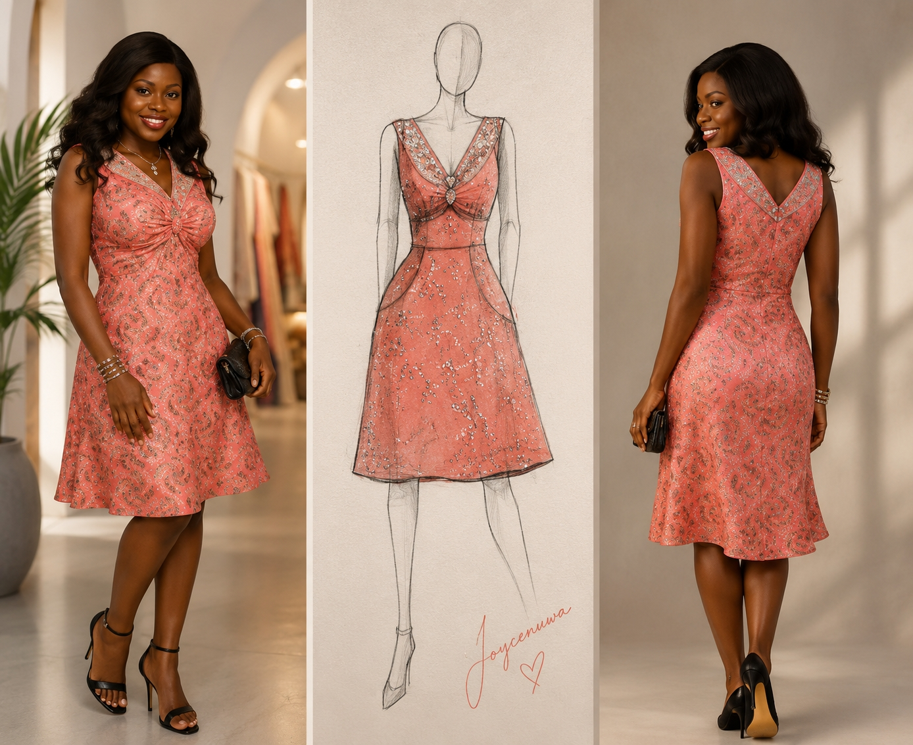
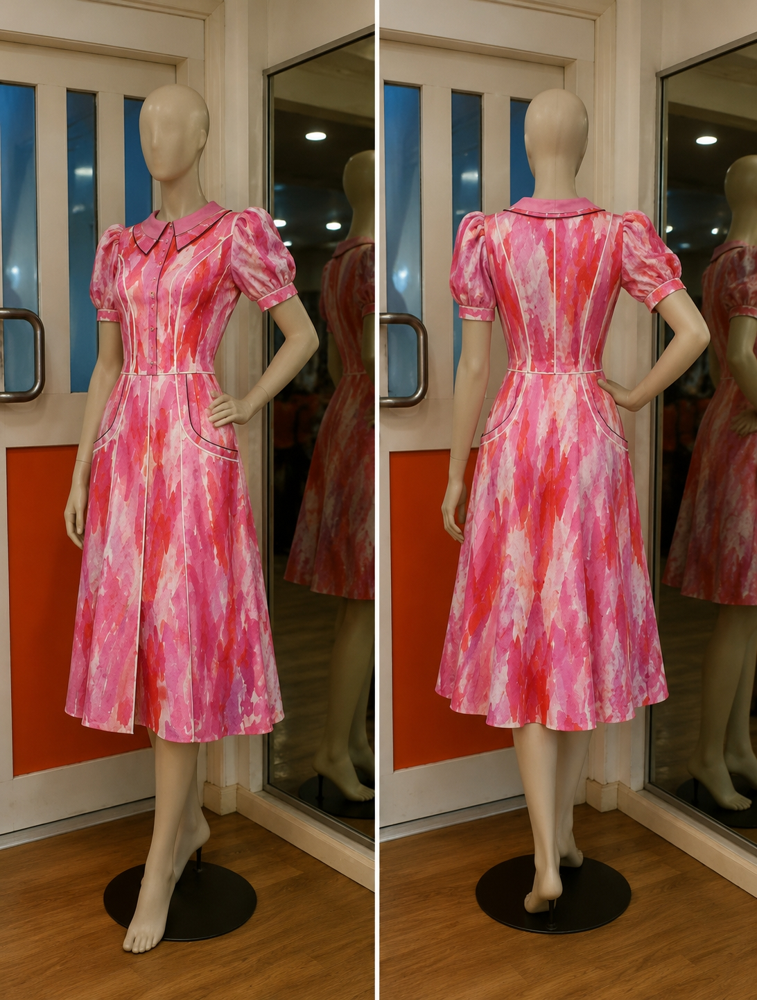

01 / 05
Bose
Womenswear
A fitted sleeveless jumpsuit with sheer illusion detailing and a bold check pattern. Bose combines clean tailoring with effortless confidence, offering a contemporary silhouette that balances structure with movement.
Fashion Collection
Contemporary Ready-to-Wear
Aarin is a ready-to-wear collection celebrating confident women through contemporary silhouettes inspired by everyday life. Combining tailored dresses, coordinated separates and modern occasion wear, the collection explores how African textiles, lace and clean construction can be reinterpreted for work, social gatherings and contemporary living.
Balancing elegance with practicality, each design reflects Joycenuwa’s belief that clothing should feel expressive, versatile and effortlessly wearable while remaining rooted in craftsmanship and individuality.
← Back to Fashion01 · Collection
Five ready-to-wear designs exploring contemporary tailoring, African textiles and versatile dressing for the modern woman.
01 / 05
Womenswear
A fitted sleeveless jumpsuit with sheer illusion detailing and a bold check pattern. Bose combines clean tailoring with effortless confidence, offering a contemporary silhouette that balances structure with movement.

02 / 05
Womenswear
Ife pairs delicate lace with vibrant Ankara in a dramatic high-low skirt, bringing together contemporary elegance and African textile traditions in a look designed for confident occasion dressing.

03 / 05
Womenswear
A peplum dress that combines floral lace with a fitted pencil skirt, creating a refined silhouette suited to both formal occasions and contemporary professional wear.

04 / 05
Womenswear
Lara features a softly flared silhouette with a gathered neckline and subtle embellishment. Designed for versatility, it offers an elegant balance between everyday sophistication and special occasions.

05 / 05
Womenswear
Sola is a collared day dress featuring soft puff sleeves, defined seams and practical pockets. Its painterly print and feminine silhouette create a timeless design that is both polished and effortlessly wearable.